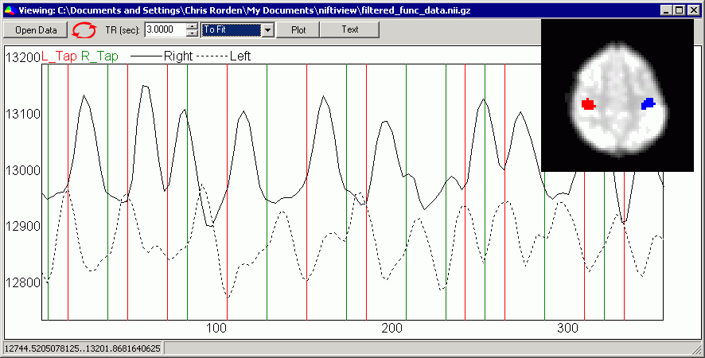
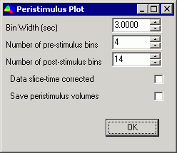
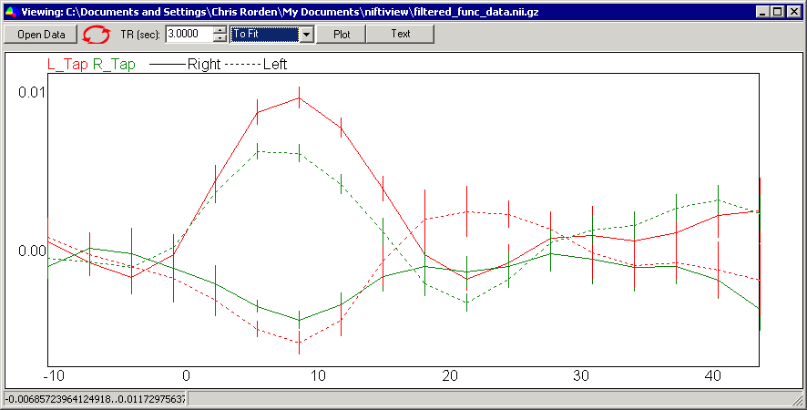
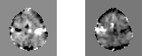

|
Peristimulus Plots |
Introduction
SPM and FSL are powerful tools for analyzing fMRI data. However, the
statistical maps most people generate with these tools can be difficult
to interpret. Generating peristimulus plots can allow you to get a
better idea of what your data actually looks like, and can help you
determine if a region shows an increased amplitude of activity or a more
sustained response to a stimuli. To generate peristimulus plots you
will need:
- MRIcron developmental release.
- A 4D fMRI dataset (typically motion corrected and smoothed)
- A FSL format 3-column text file for each condition you wish to analyze.
- Optional: regions of interest for specific brain regions.
You can also click here to download a sample data set (14mb).
Basic Usage
Here are step-by-step instructions
- launching MRIcron. Then choose '4D traces' from the View menu.
- Press the 'Open Data' button.
- You will be asked to load a sample dataset, choose filtered_func_data.nii.gz
- Optional: You will be asked to load event onset files, choose both L_Tap.txt and R_Tap.txt
- Optional: You will be
asked whether you want to load any regions of interest. These can be
hdr/img; nii; or voi files (note you have to pull down the file-type
menu to select voi files). Select L.voi and R.voi
- MRIcron will now display a timeline for your data. If you have
loaded multiple regions, a separate line displays each ROI. If you have
not selected any ROIs, you will be shown the currently selected voxel -
use MRIcron's main window to select a voxel you want to view and then
press the red refresh button in the timeline window to see the
timeiline for this voxel. Note that if you have loaded any event
onsets, each condition is shown as a unique color of vertical stripes -
for example in the example left hand taps are shown as red bars and
right taps are shown as green bars. Note with the example datasets that
left taps are followed by increases in signal for the right ROI, while
right taps are followed by increasing signal in the left hemisphere.

- Before generating peristimulus plots, make sure that the TR is
accurately set. Our sample data has a TR of 3 seconds, and this is
correctly reported in the image file, so MRIcron correctly reports a TR
of 3 seconds. If your TR is incorrect, the events will not be correctly
aligned with your images.
- Press the 'Plot' button to generate phase-locked peristimulus
plot. You will want to check the settings for your peristimulus plot
- The bin width sets the resolution for plot - smaller bins are
more precise but noiser. By default, the bin width is set to your TR,
in our example 3 seconds.
- The pre-stimulus bins sets the number of baseline bins. In our example we are setting 4 bins (12 seconds).
- The number of post-stimulus bins plot signal changes after an
event has been presented. Remember that fMRI signals are sluggish, and
take 5-6 seconds to peak. For the example, set this to 14 (42 seconds).
- If you slice time corrected your data, check the appropriate
box. Event times will be adjusted for the acquisition of the
middle-slice in your volume (e.g. all of your onsets will be adjusted
by 0.5 TR).
- The save peristimulus volume button allows you to save a
separate 3D dataset for each time bin. This is an advanced feature we
will discuss later.

- MRIcron generates a peristimulus plot. Different colors are used
for the different conditions, while different line styles are used for
the different regions of interest. For our example, note that the right
hemisphere shows a response for left but not right taps, while the
reverse is true for the left hemisphere. The peak amplitude is about 1%
signal change. While this effect sounds small, note that we are
averaging over a large number of voxels which in this case were
selected baseed solely on anatomy, rather than post-hoc selecting the
single most active voxel. Also note that the error bars are rather
small.

Advanced Usage
- For statisitcal analysis, you will want the precise values for
the effect sizes and standard errors. If you press the 'text' button
instead of the plot button, you will be shown the precise values - save
these as a .csv (comma separated values) format file to open them and
generate nice graphs with Excel or other software.
- You can save peristimulus volumes to see precisely what is
happening for each voxel at a given time point. The image below shows
the 8th time bin for both the left and right movement conditions. Note the
bright contralateral signal.

- When generating peristimulus plots, you have an option of choosing whether your data has been slice time corrected or not. This will influence how the event times are interpretted. Without STC, my software assumes that the event times are relative to the first slice of the first volume. On the other hand, if STC is checked, all times are relative to the acquisition of the middle slice of the first volume. The image below illustrates this (assuming a 2 second TR): without STC, the first event occurs at 0.5sec, and the second event occurs at 6 seconds. With STC, the first event occurs at -0.5s, and the second event occurs at 5s. Sparse acquisition is useful for auditory studies (as stimuli can be presented while the scanner is silent, and we can then observe the sluggish consequences of this). However, most sparse studies will not yield good peristimulus plots (good plots will required jittered stimulus-scan intervals). In any case, for sparse imaging I suggest making sure STC is NOT selected, and having the origin for event times to be the acquisition of the irst slice. Note that my software does not adjust for differences in slice time acquisition within a volume. The whole 3D volume is assumed to have been collected at a single instant. Therefore, (for axial acquisitions) signals from the cerebellum will appear to have a different lag than signals from the top of the brain. If you want to make comparisons between different brain areas, you may want to slice time correct your data before generating peristimulus plots.

Notes
My software gives you a direct view into how your data looks. Also note
that a single timepoint can be averaged into a number of bins (e.g. if
the events occur rapidly, one scan could show a timepoint which is
after a previous event but before one or more others). Furthermore, my
software does not attempt to remove data from other conditions. An
alternative approach is to fit each condition and then plot the data
having regressed out the variability explained by other conditions. A
nice implementation of this alternative approach is described here.